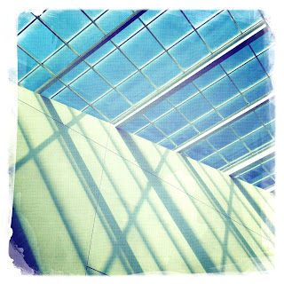

Recovered weblog entry
Light pours

I'll say nothing about the architecture, but it's wonderful that when you have to be inside, you don't really have to be without a bit of sunshine. Lens: Roboto Glitter
Film: DreamCanvas

Recovered weblog entry

I'll say nothing about the architecture, but it's wonderful that when you have to be inside, you don't really have to be without a bit of sunshine. Lens: Roboto Glitter
Film: DreamCanvas